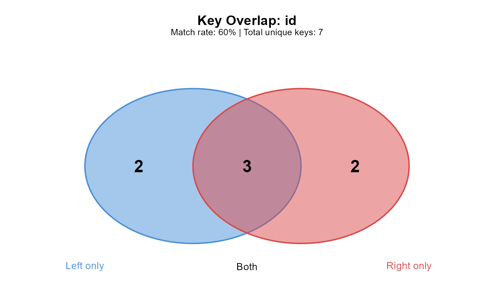

Creates a Venn diagram showing key overlap between tables.
Arguments
- x
A
JoinReportobject.- file
Optional file path to save the plot (PNG, SVG, or PDF based on extension). If NULL (default), displays in the current graphics device.
- width
Width in inches (default 6).
- height
Height in inches (default 5).
- colors
Character vector of length 2 for left and right circle colors.
- ...
Additional arguments (ignored).
Examples
orders <- data.frame(id = 1:5, val = 1:5)
customers <- data.frame(id = 3:7, name = letters[3:7])
report <- join_spy(orders, customers, by = "id")
plot(report)
